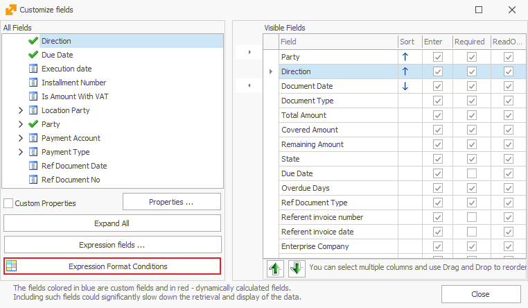

Conditional formatting
The procedure will show you how to format the size, thickness, style, and font color of the text as well as the color of the field frame in a given navigator.
For example, we will format the thickness and font color of the text of sales orders rows in the Sales Orders navigator. For this purpose you can go to:
Main Menu -> Sales -> Orders navigator
- Click on Show Data and then right-click on the rows of the navigator. From the displayed menu select Customize fields;
- The Customize fields window will open. Click on the Expression Format Conditions button:

A window will open for you to enter the desired conditions:

- Click on Add to start making a new condition - a new window will open for you. Here select the Fields option on the left. In the small middle section you will see all fields that you can use to set conditional coloring for:

In this case, we will make all new sales orders to be bolded. For that purpose, double click on the State field (it will show up at the top of the window). Then manually type in there == ‘New’ (two times the equal-to sign and the word New in single quotes).
Click the 'OK' button.
- After you set the condition, you can choose a color and set a bold font, as you see in the picture below.
- After you close the window, the program will display all new sales orders in bold and in a red font color: